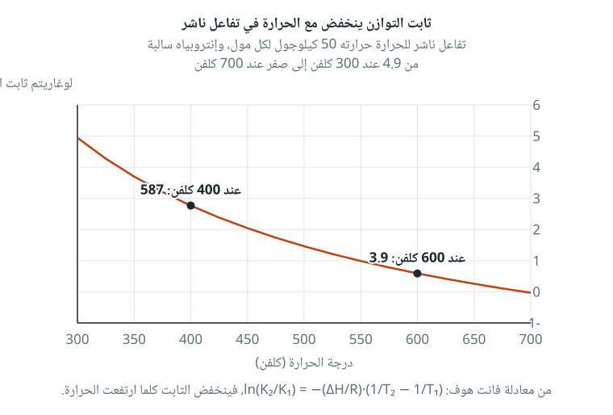

التوازن الكيميائي
Chemical Equilibrium
حالة يستمر فيها التفاعل في الاتجاهين بمعدلين متساويين فتبقى التراكيز ثابتة، ويحدّد موقعها ثابت التوازن K عند درجة حرارة معيّنة لا عند غيرها.
التوازن الكيميائي حالة حركية لا سكون. يستمر التفاعل الأمامي والتفاعل العكسي في الوقت نفسه، ويتساوى معدلاه، فيثبت تركيز كل نوع. تسمّى الحالة توازنًا لأن التراكيز لا تتغيّر بالقياس، لا لأن الجزيئات توقفت عن التحول.
يُعبَّر عن موقع التوازن بحاصل التفاعل Q، وهو تركيب التراكيز الآنية بالشكل نفسه الذي يأخذه ثابت التوازن K. إذا كان Q أصغر من K سار التفاعل أمامًا، وإذا كان أكبر رجع، وإذا تساوياه فالنظام في التوازن. تربط الطاقة الحرة بالحاصل: ΔG = ΔG° + R·T·ln Q، وعند التوازن يصبح ΔG صفرًا فينتج ΔG° = −R·T·ln K.
K دالة لدرجة الحرارة وحدها. لا تغيّره إضافة متفاعل ولا الضغط ولا الحفاز، وإنما يغيّر تغييرُ هذه العوامل قيمةَ Q فيتحرك النظام نحو موضع جديد. قاعدة لوشاتلييه ليست قانونًا مستقلًّا، بل نتيجة مباشرة لهذا الإزاحة: زيادة الحرارة ترفع K في التفاعل الماصّ وتخفضه في الناشر.
كيف تعمل الظاهرة؟
ينشأ التوازن من تنافس معدلين يتبع كلٌّ منهما تراكيز طرفه. في البداية يكون التفاعل الأمامي سريعًا والتراكيز تتحرك بسرعة، وكلما استُهلكت المتفاعلات انخفض معدل الاتجاه الأمامي، وفي الوقت نفسه يرتفع معدل الاتجاه العكسي مع تراكم النواتج. يلتقي المنحنيان عند قيمة واحدة لا تتغيّر، وهي حالة التوازن. هذا يعني أن التوازن يبلغ في زمن محدود ويعتمد على الحركية، لا على الديناميك الحراري وحده: تفاعل كبير الطاقة الحرة الدافعة قد يبقى عمليًّا على حاله أعوامًا لأن حاجزه الحركي عالٍ.
العلاقة بالأرقام
من ΔG° = −R·T·ln K عند 298.15 K، ومع R = 8.314462618 J/(mol·K): قيمة K = 1.0×10⁵ تقابل ΔG° = −28.5 kJ/mol، وقيمة K = 1.0×10⁻³ تقابل ΔG° = +17.1 kJ/mol. ويُحسب أثر الحرارة بمعادلة فانت هوف: ln(K₂/K₁) = −(ΔH°/R)·(1/T₂ − 1/T₁). لتفاعل ماصّ للحرارة ΔH° = +50 kJ/mol يرتفع K إلى 170 ضعفًا عند الانتقال من 298.15 K إلى 400 K، وهو ما يفسّر لماذا تُشغَّل التفاعلات الماصّة عند حرارة عالية لا لأن الحرارة «تسرّع» التفاعل فقط، بل لأنها تزيح الموضع نفسه.
مفاهيم متقاربة
الخلط الأول مساواة التوازن باكتمال التفاعل: عند K كبير جدًّا يكاد التفاعل يكتمل، وعند K صغير جدًّا يكاد لا يبدأ، لكن الحالة الوسطى شائعة وليست عيبًا في التجربة. الثاني ظنّ أن التراكيز متساوية عند التوازن؛ الثابت هو نسبتها المرفوعة لأسّ المعاملات، لا تساويها. الثالث أن الحفاز «يزيح» التوازن: يقرّبه أسرع ولا يحرّكه. والرابع الخلط بين K و Q: K خاصية للنظام عند حرارة معيّنة، وQ قيمة آنية تتغيّر مع كل إضافة أو تخفيف.
حدود التطبيق
تُكتب K بالتراكيز في المحاليل الممدّدة، ويفشل هذا التقريب في المحاليل المركّزة وفي الأملاح القوية التأين حيث يجب استخدام الأنشطة ومعاملاتها. وفي الغازات عند ضغوط عالية تُستبدل الضغوط الجزئية بالزائغيّة، لأن الجزيئات لم تعد تسلك سلوك الغاز المثالي. وفي الأنظمة المفتوحة التي يُسحب منها ناتج باستمرار لا يبلغ النظام توازنه أصلًا، فلا معنى لتطبيق لوشاتلييه على حالة لا وجود لها. كما أن التوازن لا يقول شيئًا عن الزمن اللازم لبلوغه، وهذا حدّ جوهري في أي تصميم صناعي.

| الكمية | القيمة | المصدر |
|---|---|---|
| ثابت الغازات العام R | 8.314462618 جول/(مول·كلفن) | [2] |
| الطاقة الحرة القياسية المقابلة لـ K = 1.0×10⁵ عند 298.15 K | −28.5 كيلوجول/مول | [2] |
| تضاعف K لتفاعل ΔH° = +50 kJ/mol بين 298.15 و400 K | 170 مرة | [1] |
| قيمة K التي تقابل ΔG° = +17.1 kJ/mol | 1.0×10⁻³ بلا وحدة | [1] |
المصادر
- 1 Chemistry 2e — 13.2 Equilibrium Constants — OpenStax, Rice University. openstax.org/books/chemistry-2e/pages/13-2-equilibrium-constants · اطُّلع عليه 2026-11-16
- 2 CODATA Value: molar gas constant — NIST, Fundamental Physical Constants. physics.nist.gov/cgi-bin/cuu/Value?r · اطُّلع عليه 2026-11-16
- 3 Chemistry 2e — 13.3 Shifting Equilibria: Le Châtelier's Principle — OpenStax, Rice University. openstax.org/books/chemistry-2e/pages/13-3-shifting-equilibria-le-chateliers-principle · اطُّلع عليه 2026-11-16
استشهد بهذا المصطلح
الصيغتان مبنيتان من بيانات الصفحة نفسها: العنوان والتاريخ ورابط النسخة المنشورة.
التوازن الكيميائي — Chemical Equilibrium. (2026). ديوان المعرفة — انفراد. https://infiradev.com/diwan/terms/chemical-equilibrium.html
@misc{chemical-equilibrium2026,
title = {التوازن الكيميائي},
titleaddon = {Chemical Equilibrium},
howpublished = {{ديوان المعرفة — انفراد} — مرجع علمي عربي},
year = {2026},
url = {https://infiradev.com/diwan/terms/chemical-equilibrium.html},
urldate = {2026-11-16},
note = {مراجعة علمية: مراجعة آلية — ديوان المعرفة (روابط المصادر + عقد المحتوى + وجود الرسم) 2026-11-16}
}
راجعه: مراجعة آلية — ديوان المعرفة (روابط المصادر + عقد المحتوى + وجود الرسم) 2026-11-16 · 2026-11-16 · آخر تحديث 2026-11-16